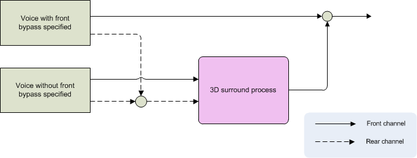

bool SetSoundOutputMode(
OutputMode mode
);
| Name | Description | |
|---|---|---|
| in | mode | Sound output mode |
true if configuration succeeded; otherwise, returns false. Sets the sound output mode.
The default value is the sound mode specified by the System Settings.
For each sound output mode, the following operations are performed on the 4-channel (FrontLeft, FrontRight, RearLeft, RearRight) buffer that mixes the registered nn::snd::CTR::Voice information with the two Aux buses.
Output = (FrontLeft + FrontRight + RearLeft + RearRight) * 0.5
OutputLeft = FrontLeft + RearLeft OutputRight = FrontRight + RearRight
nn::snd::CTR::SurroundSpeakerPosition-based surround sound processing
The surround processing switches automatically depending on whether the sound is being output to the built-in speakers or headphones. When sound is being output to the speakers, you can use nn::snd::CTR::SetSurroundDepth to set the depth and therefore vary the intensity of the surround sound effect. When sound is being output to headphones, this value is ignored.
Surround sound processing is run on mixed audio data as a whole rather than on each nn::snd::CTR::Voice. In contrast, nn::snd::CTR::Voice instances have a function called nn::snd::CTR::Voice::SetFrontBypassFlag that can be used to bypass surround sound processing of the front two channels (FrontLeft and FrontRight). See the figure below for details.
